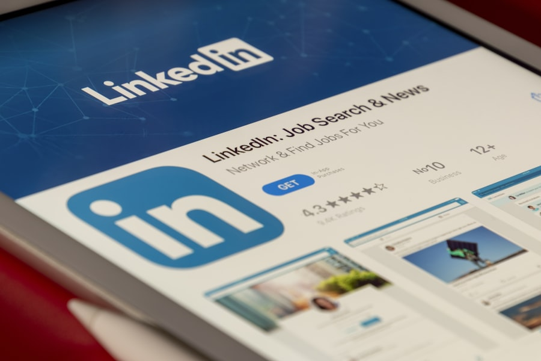

Particuliers — étudiants, reconversions, salariés en évolution
Votre carrière mérite mieux que le doute.
Les candidatures qui restent sans réponse, la peur de l'entretien, la perte de sens : je connais ces sensations — j'ai vu des centaines de candidats les vivre. Et je sais comment on en sort. Vous avez du potentiel : on le rend visible, crédible, convaincant.

Votre candidature, vue par une recruteuse 👀Concrètement
On regarde votre profil comme un recruteur le regardera
CV, LinkedIn, lettre : je repère en quelques secondes ce qui accroche et ce qui bloque — parce que c'est exactement ce que j'ai fait pendant 7 ans, de l'autre côté de la table. On corrige, on affine, on vous rend visible.
Sur quoi on travaille
Six chantiers, un objectif : que ça aboutisse
Clarifier votre projet pro
Vous savez ce que vous ne voulez plus, pas encore ce que vous voulez vraiment. Avec l'Ikigai, on aligne vos talents, vos envies profondes et ce que le marché recherche.
Une candidature qui marque
CV percutant, LinkedIn différenciant, lettres qui racontent votre vraie histoire. Relue et challengée avec l'œil de la recruteuse — aucun angle mort.
Réussir vos entretiens
L'entretien n'est pas un interrogatoire : c'est une conversation à gagner. Storytelling, questions pièges, gestion du stress — on s'entraîne jusqu'à la vraie confiance.
Votre personal branding
Vous existez déjà en ligne — la question, c'est comment. On construit une présence pro authentique et alignée avec vos ambitions. Pas un personnage : vous, en mieux visible.
L'IA, votre alliée
ChatGPT, ATS, algorithmes LinkedIn : on décode les nouveaux codes du recrutement, concrètement. L'IA vous fait gagner du temps — sans perdre votre authenticité.
Transitions & mobilité
Reconversion, changement de secteur, mobilité interne ou internationale : chaque transition a ses codes. On les décode et on construit votre stratégie de repositionnement.
Comment ça se passe
Un parcours en quatre temps
Le décodage
Une vraie discussion, pas un questionnaire. Vous parlez, j'écoute — et je repère où ça bloque et par où commencer.
La construction
Projet clarifié, message affûté, stratégie de candidature posée. Du concret, du mesurable, de l'actionnable.
L'entraînement
Simulations d'entretien, pitch, gestion de la pression. On répète jusqu'à la confiance vraie — pas celle de façade.
Le cap tenu
Une question, un doute, une opportunité ? Je reste dans les parages jusqu'à ce que ça aboutisse.
Les formules
Des formats simples, sans surprise
Tous les accompagnements démarrent par un échange découverte offert de 30 minutes — pour valider ensemble que c'est le bon moment et la bonne approche.
Séance à la carte
ou 120 € la séance approfondie de 90 min
- Un besoin ciblé : CV, LinkedIn, pitch…
- Conseils actionnables immédiatement
- Visio ou présentiel (Montpellier / Nîmes)
- Support de séance envoyé après
Pack Décollage
CV + LinkedIn + entretien — le trio gagnant
- Audit complet de votre candidature
- Refonte CV & profil LinkedIn
- Simulation d'entretien débriefée
- Suivi par e-mail entre les séances
Cap sur 3 mois
L'accompagnement complet, du projet à la signature
- Projet pro clarifié avec l'Ikigai
- Candidature & personal branding complets
- Entraînement entretiens illimité
- Support continu jusqu'au résultat
💡 Tarif étudiant / jeune diplômé : parlons-en simplement lors de l'échange découverte — des solutions existent. Paiement en 2 ou 3 fois possible sur les packs.
Questions fréquentes
Tout ce que vous n'osez pas demander
Combien de temps pour voir des résultats ?
Cela dépend de votre point de départ. Clarifier un projet : 1 à 2 mois. Préparer un entretien : 3 à 4 semaines. Réussir une reconversion : 3 à 6 mois. Pas de recette miracle — du travail sérieux, régulier, et une stratégie qui tient la route.
Visio ou présentiel ?
Comme vous préférez. En présentiel autour de Montpellier et Nîmes, ou en visio partout en France et à l'international. L'essentiel : que le format vous convienne vraiment.
Je suis en reconversion complète — vous pouvez vraiment m'aider ?
Oui, et c'est même l'un de mes terrains favoris. Les personnes en reconversion ne sont pas des débutantes : elles ont des compétences transférables, de la maturité et une vraie motivation. Bien préparée et cohérente avec son marché cible, une reconversion est une force en entreprise.
C'est du coaching « paroles » ou un vrai travail de fond ?
Un vrai travail. On ne vernit pas : on regarde ce qui fonctionne chez vous, ce qui doit changer, et on le change. Cela demande de l'implication et de l'honnêteté — des deux côtés.
Le premier rendez-vous est-il payant ?
Non. Le premier échange découverte de 30 minutes est offert et sans engagement : on fait le point sur votre situation et on valide ensemble la bonne approche.
On commence ?
Prêt·e à bouger les lignes ?
Réservez votre échange découverte : 30 minutes pour vérifier qu'on est sur la même longueur d'onde. C'est gratuit et sans prise de tête.
Réserver mon créneau